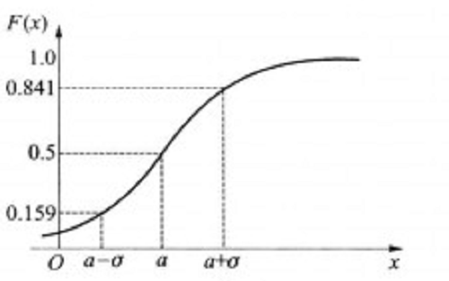

The probability distribution function is one of the basic concepts of probability theory. In practical problems, it is often necessary to study the probability that the value of a random variable ξ is less than a certain value x.
This probability is a function of x. This function is called the distribution function of the random variable ξ , referred to as the distribution function, and is referred to as $F(x)$, That is, $F(x)$ = P(ξ<x) (-∞ <x <+ ∞), and
it can determine the probability that a random variable falls within any range.

Fig.1.1 - Probability distribution graph
The probability distribution function is a mathematical representation of the distribution law of random variables. For any real number x, the probability of the event (X < x ) is of course a function of x. Let F (x) = P (X < x), obviously F (-∞) = 0, F (∞) = 1, and call F (x) the distribution function of the random variable X.
Therefore, the distribution function F (x) completely determines the probability of the event [a≤X≤b], or the distribution function F (x) completely describes the statistical characteristics of the random variable X.
Common discrete random variable distribution models include "0-1 distribution", binomial distribution, Poisson distribution, etc .; continuous random variable distribution models include uniform distribution, normal distribution, Rayleigh distribution, etc.